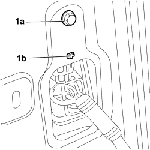
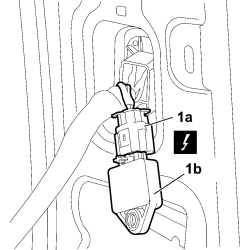

5580C40 SIDE BAG SENSOR (ONE), LH OR RH - R.R.
- Path
- Procedures > 55 ELECTRICAL EQUIPMENT > 5580 SPECIAL ACCESSORIES > 5580C AIR BAG SYSTEM > 5580C40 SIDE BAG SENSOR (ONE), LH OR RH - R.R.
- Kind
- repair procedure (removal / refitting; the operation number is the code)
- Applies to
- all engines; all production periods
- Interactive page
- https://sloeber94.github.io/elrnDB-fCrm/en/#/194000808
Applies to: all engines; all production periods
- Turn the ignition key to the OFF position and extract it.
- Disconnect the negative and positive battery terminals and insulate them.
- Wait for 10 minutes before continuing.
Description | Connector | |
|---|---|---|
BATTERY |
Applies to: all engines; all production periods
 Removing
Removing
 Refitting
RefittingOp. 7040L44 REAR DOOR RUNNING BOARD (ONE), LEFT OR RIGHT - R.R.
Op. 7040H36 CENTRE PILLAR LOWER ELEMENT (ONE), LEFT OR RIGHT - R.R
1. Undo the fixing bolt (1a), release the reference pin (1b) and detach the side Air Bag sensor from the vehicle.

Applies to: all engines; all production periods
1. Disconnect the electrical connection (1a) and remove the side Air Bag sensor (1b) from the vehicle.
Description | Connector | |
|---|---|---|
1a | SENSOR FOR DRIVER'S SIDE BAG |
Description | Connector | |
|---|---|---|
1a | SENSOR FOR PASSENGER SIDE BAG |

Applies to: all engines; all production periods
Refitting
Removing- Check that the Side Bag sensor is not damaged.
- Connect the electrical connection to the side Air Bag sensor.
- Position the sensor for the side Air Bag correctly in its housing, attaching the reference pin, screw in the fixing bolt and tighten it to the recommended torque.
Component | Fastening | dia | Value (daNm) | Validity |
|---|---|---|---|---|
HEAD BAG RETAINING BAND TO BODYSHELL | Bolt | M6 | 0,64 ÷ 0,96 |
- Connect the electrical connection to the side Air Bag sensor.
Description | Connector | |
|---|---|---|
SENSOR FOR DRIVER'S SIDE BAG |
Description | Connector | |
|---|---|---|
SENSOR FOR PASSENGER SIDE BAG |
Op. 7040H36 CENTRE PILLAR LOWER ELEMENT (ONE), LEFT OR RIGHT - R.R
Op. 7040L44 REAR DOOR RUNNING BOARD (ONE), LEFT OR RIGHT - R.R.
- Connect the negative and positive battery terminals.
Description | Connector | |
|---|---|---|
BATTERY |
Topics linked from this page (6)
- 5580C AIR BAG SYSTEM
- 7040H36 CENTRE PILLAR LOWER ELEMENT (ONE), LEFT OR RIGHT - R.R
- 7040L44 REAR DOOR RUNNING BOARD (ONE), LEFT OR RIGHT - R.R.
- A001 BATTERY
- K066 SENSOR FOR DRIVER'S SIDE BAG
- K067 SENSOR FOR PASSENGER SIDE BAG